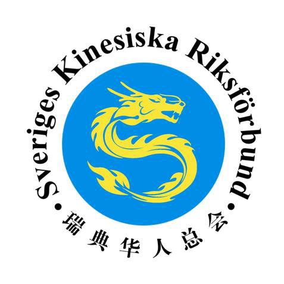

2024年2月12日
瑞青中文学校2024龙年游园会
2024年2月10日大年初一，瑞青中文学校龙年游园会快乐开启！瑞典青田同乡会会长夏海栋、校长王梅霜、副校长张晴代表校董事会慰问老师们，并带来了来自中国驻瑞典大使馆和浙江侨联的新春礼品。活动包括踢毽子、套圈、词语接龙等传统游戏，高年级学生观看春晚、玩桌游、跳科目三。
阅读全文 →

2024年2月10日大年初一，瑞青中文学校龙年游园会快乐开启！瑞典青田同乡会会长夏海栋、校长王梅霜、副校长张晴代表校董事会慰问老师们，并带来了来自中国驻瑞典大使馆和浙江侨联的新春礼品。活动包括踢毽子、套圈、词语接龙等传统游戏，高年级学生观看春晚、玩桌游、跳科目三。
阅读全文 →
由斯德哥尔摩中国文化中心主办、瑞典华人总会承办的"2024年瑞典欢乐春节华侨华人联欢-浙江婺剧专场演出"在斯德哥尔摩成功举办。崔爱民大使向旅瑞侨胞致以新春问候，浙江婺剧团表演了《抬花轿》《吕布试马》《三打白骨精》等精彩节目，六百余人参加。
阅读全文 →
瑞典华人总会向全体旅瑞华人华侨致以最诚挚的新年问候，祝大家新年快乐、万事如意。

瑞典华人总会与Axel花样滑冰俱乐部联合举办免费集训活动，孩子们体验冰上芭蕾，发掘运动潜力，培养自信心和勇气。

由浙江省侨办侨联与瑞典华人总会联合主办的端午慰侨活动在瑞青中文学校成功举办，向海外侨胞传递家乡关怀。

崔爱民大使出席"大使奖"朗诵比赛颁奖仪式，三百余名师生家长参加，学生表演了《游子吟》《春江花月夜》等经典诗词朗诵。

崔爱民大使出席瑞典青田同乡会新春团拜会，向旅瑞侨胞送上新春祝福，鼓励华人社团加强团结合作。

瑞青中文学校举办新春游园会，同学们在欢乐氛围中感受中华传统文化的魅力，共庆新春佳节。
瑞典华人总会（Sveriges Kinesiska Riksförbund，简称瑞华总会）是代表全瑞典华人、华侨、留学生及其社团的非宗教、非政治、非营利性群众联合体，具有独立的法人资格，总部设在斯德哥尔摩。
瑞华总会以维护华人在瑞典的合法权益，增强在瑞华侨华人社区团结互助，弘扬中国传统文化，推动中瑞两国民间交流和合作为宗旨。瑞华总会以本章程为基本的活动准则，并依照瑞典法律独立开展工作。
总会下辖19个会员组织，涵盖商会、同乡会、文化团体、学生学者联谊会、妇女协会、体育协会等，覆盖瑞典全国各主要城市，服务数千名旅瑞华人华侨。
多年来，总会积极组织各类文化活动、慰侨活动、体育赛事，为促进中瑞文化交流、帮助华人融入瑞典社会做出了重要贡献。
叶克清、叶沛群、安明玉、甘建广、唐兵、叶克雄、程鑫、王钰清、王艾芹、张翼、吴俊博、伍王令、徐力、陈德忠、张巧珍、王梅霜、陈芃芃、郝琦、卢琦
曹望凯、顾丰、胡永明、金雷、林春明、林若群、刘晨、刘东山、刘荣生、王明生、吴奇、夏大庆、祝捷、杨哲、安伟、叶沛剑、詹维权、张巧伟、张少华、郑王平、周阳、陈帅、何勇、张小丽、赵福红、林若杰、周斌、周民伟、李玮、朱俊、金献伟、夏海栋、夏海龙、黄炳旺、孙王敏、付子豹、刘春旭、王泽丰、兰方明、曹博、王速、吴晶、陆超人、莫郎峰、李博、任文君
程鑫、伍王令、卢琦、徐力、刘鹏、刘晨、王艾芹、何勇、耿浩杰、熊梓屹
主席：王钰清
副主席：陈芃芃、王艾芹、王梅霜
常务理事：郝琦、任文君、王速、吴晶、李博、王瑛、赵文洁、李玮、李红露、赵丹
秘书长：黄淼
副秘书长：刘春旭、刘洁萍
瑞典华人总会(简称瑞华总会)是代表全瑞典华人、华侨、留学生及其社团的、非宗教、非政治、非营利性群众联合体，具有独立的法人资格，总部设在斯德哥尔摩。
瑞华总会以维护华人在瑞典的合法权益，增强在瑞华侨华人社区团结互助，弘扬中国传统文化，推动中瑞两国民间交流和合作为宗旨。
瑞华总会以本章程为基本的活动准则，并依照瑞典法律独立开展工作。
2.1 组织机构
瑞华总会的组织机构包括：年度代表大会；常务理事会，审计委员会，推举委员会；总会会长；秘书处，财务处。
2.2 年度代表大会
瑞华总会年度代表大会由各会员协会选举产生的理事组成，是总会的最高决策机构，于每年5月召开，出席会议的理事超过总数的三分之二以上所做的决议将视为有效。
2.3 常务理事会
常务理事会是瑞华总会年度代表大会的常设机构，它是年度代表大会闭会期间的最高决策机构。设主席、副主席和七名常务理事。常务理事会会议每季度至少召开一次。
2.4 总会会长
瑞华总会设会长、常务副会长各一名，副会长若干名，由年度代表大会从总会的正式会员中选举产生。其中会长和常务副会长每届任期三年，连续任职不得超过两届。总会会长是瑞华总会的法人代表。
2.5 审计委员会
审计委员会负责瑞华总会内外审计的沟通、监督、核查等工作，由年度代表大会选举产生，主席一名、委员四名。
2.6 推举委员会
推举委员会负责为瑞华总会各个机构举荐合适的候选人，设主席一名、委员四名。
2.7 秘书处
秘书处是瑞华总会日常活动的工作机构，主要负责文件的制定和发放、档案的保存和管理，以及各项活动的组织和实施。由秘书长、副秘书长和若干名干事组成。
2.8 财务处
在常务理事会领导下，负责起草总会年度预算报告，管理总会名下账目和流动资产。会计年度定为每自然年的1月1日至12月31日。
3.1 团体会员
瑞典境内依法登记注册的各类华人协会或团体，承认并遵守本章程，即获得申请成为瑞华总会团体会员的资格。团体会员应于每年四月三十日之前缴纳会费，会费的标准为10克朗/人/年。
3.2 个人会员
凡在瑞典合法居住的，无论国籍、性别、民族、宗教信仰，承认并拥护瑞华总会章程的个人，即可申请加入。个人会费标准为100克朗/年。
3.3 荣誉成员
对瑞华总会有一定特殊贡献的会员，经由常务理事会推举，并通过年度代表大会表决后，即可获得终身荣誉会员的称号。
总会活动经费来源包括：会费、政府拨款和补助、捐赠、其他合法收入。总会经费必须用于章程所规定的用途，不得在会员中分配。瑞华总会解散或撤销时，其剩余财产扣除清算费用后归全体会员所有。
瑞典华人总会的瑞典文名称为 Sveriges Kinesiska Riksförbund (SKR)，英文名称为 Union of Chinese Associations in Sweden。章程修改须由超过三分之二的与会代表表决通过方可进行。撤销或解散总会须经年度代表大会五分之四以上的理事表决通过。当中文版本条款与瑞典文版本有冲突时，以瑞典文版本为准。
Sveriges Kinesiska Riksförbund (kallad för Ruihua Zonghui) vars medlemmar består av kineser bosatta i Sveriges kineser, utlandskineser, kinesiska studenter och andra kinesiska föreningar i Sverige. Föreningen är religiöst, politiskt obunden och icke vinstdrivande.
Sveriges Kinesiska Riksförbund har till syfte att försvara medlemmarnas rättigheter och intressen i Sverige, att stärka enighet och solidaritet mellan kineser och kinesiska föreningar, att förmedla den traditionella kinesiska kulturen, att främja utbyte och samarbete mellan Sverige och Kina.
Förbundets verksamhetsområde är i Sverige. Förbundets kansli ligger i Stockholm.
Sveriges Kinesiska Riksförbundet består av: Styrelseledamöter, ordförande, permanent styrelse, sekretariat, revisionskommitté, valkommitté och särskilda ledamöter. Styrelseledamöter är valda av föreningsmedlemmarna och är det högsta beslutande organet. Alla resolutioner kommer att betraktas som giltiga vid två tredjedelars majoritet av ledamöterna.
Den permanenta styrelsen ledar styrelsemöte. Minst en gång varje kvartal äger rum styrelsemöte. Ordförande och Viceordförande är officiellt valda av årsmötets ledamöter och deras mandat kan förlängas.
Alla kinesiska föreningar eller grupper som i enlighet med lagstiftningen är registrerade i Sverige, följer stadgar, är behöriga att ansöka om tillträde. Medlemmarna ska betala medlemsavgift 10 kronor/person/år senast den 30 april varje år. Om ingen inbetalning skett sker automatisk uteslutning ur Riksförbundet.
Förbundets inkomstkällor: medlemsavgifter, bidrag från statliga och kommunala myndigheter, gåvor, och andra lagliga källor. Verksamhetsåret är 1 januari till 31 december.
Förbundets namn är "Sveriges Kinesiska Riksförbund (SKR)" på svenska. Förändringar i förbundets stadgar kan endast ske vid årsmötet. För stadgeändring krävs 2/3 av de närvarande ombudens röster. Beslut om upplösning av förbundet kan endast tas av årsmötet, och kräver 4/5 av rösterna.
Ändringar gäller f.o.m 2014-08-23
info@kineser.se
www.kineser.se
Stockholm, Sweden
欢迎瑞典华人社团申请加入总会